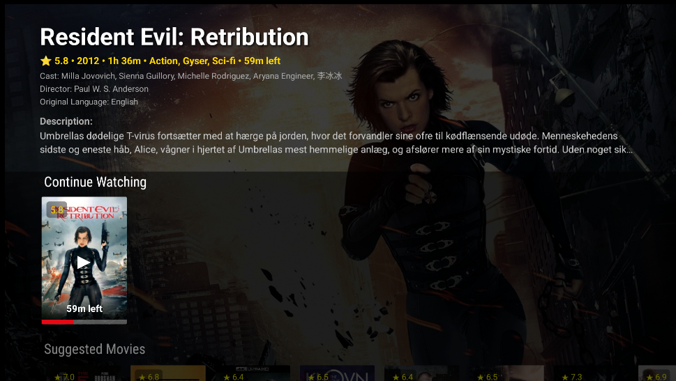

3. Daily use — Home
Four screens: Home, Live TV, Movies/Series, and Intelligent stream switching.
HOME
Home is the first item in the left menu. It shows what you were watching, what the app suggests, and titles you saved.

Screenshot needed: 01-home-dashboard.png'">- Continue Watching — resume movies or series
- Suggested — AI suggestions (requires Gemini key)
- My List — bookmarks
Use the left menu to open Live TV, Movies, or Series. Settings is at the bottom of the same menu.